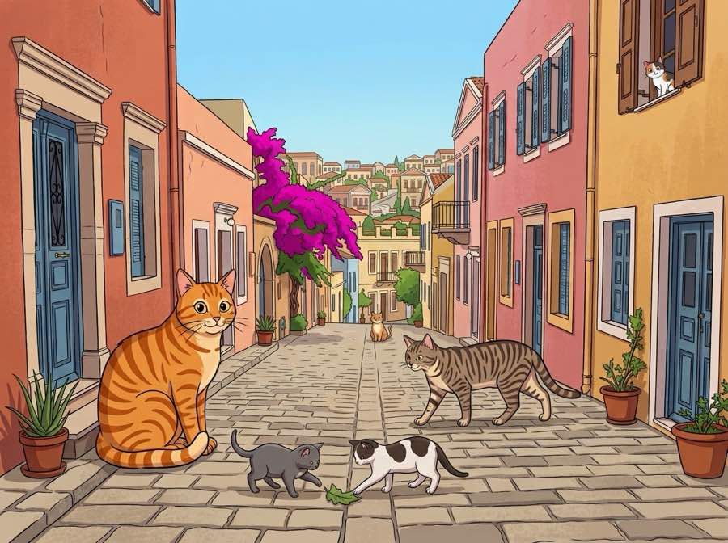

{{ t.sub }}
{{ t.err }}
{{ t.micro }}
{{ t.doneBody }}

{{ t.step1Body }}
{{ t.step2Body }}
{{ t.step3Body }}
{{ t.whyBody }}
{{ t.err }}
{{ t.micro }}
{{ t.doneBody }}
{{ t.footerLead }} Syros Cats {{ t.andWord }} Fair Shake{{ t.footerTail }} hello@catspotters.com